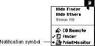

|
A Diamond Mark in the Application MenuWhen your application is running a background task and you need to notify the user of something that needs attention, you can use various techniques provided by the Notification Manager to get the user's attention. At the minimum, display a diamond-shaped mark next to your application's name in the Application menu to indicate that it is the application that is asking for the user's attention and alternate a small icon in the menu bar with the icon for the Application menu. In general, you should use the small icon that corresponds to your application or system extension, so that the user getsan additional visual clue about which application is requesting attention. Figure 4-25 shows an example of a notification symbol in a menu. Figure 4-25 The Application menu with a notification symbol  There are other notification techniques as well. You can
also play a sound |